{kind=link}
{kind=link}
{kind=link}
{kind=link}
{kind=link}
{kind=link}
{kind=link}
{kind=link}
{kind=link}
{kind=link}


Trumpeter 1/24 Messerschmitt Bf-109 G-10
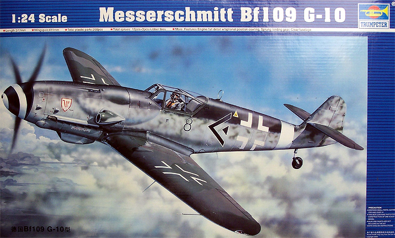
Kit #2409
MSRP $109.95
Images and text Copyright © 2007 by Matt Swan
Developmental Background
Willie Messerschmitt’s Me (or Bf) 109 series of aircraft are legendary. With the first prototype ready for flight in 1935 the type saw nearly continuous production all the way through the war and even in the first few years after the war. I could spend all day talking about the various modifications that the airframe experienced and the various pros and cons of each variant but for now I want to talk specifically about the G model. The G model was a direct development of the very successful F model which was commonly referred to as the last dogfighter of the series.
The G or ‘Gustav’ as it was referred to by pilots, had a more powerful engine installed – the Daimler-Benz DB-605 inverted V-12. This larger more powerful engine produced a higher level of horse power and torque which required some modifications to the airframe. This effort to upgrade the 109 was a direct result of the lack of sufficient Fw-190s to fill all the needed positions. It was hoped that the Gustav would help fill this vacancy while more 190s were manufactured. Unfortunately the increase in power and weight only exasperated some existing shortcomings of the type such as its difficult ground handling and increasing difficulty in handling during flight. The Gustav was a handful even for experienced pilots.
The first G models were entering service in 1942 and were manufactured through 1944 with nearly 24,000 examples being produced in more than 16 sub variants. The G-10 was an effort to standardize the G model production and incorporate all the previous improvements. The G-10 featured the DB-605D engine which included the MW-50 water-methanol injection system. This gave the variant a top speed of 690 KPH (429 MPH). Its armament consisted of a MG-151/20 20mm Motorkanone mounted in the nose and two MG-131 13.7mm machine guns in the cowling. It featured a pressurized cockpit and a Gallant style canopy. Even though this was intended as a standardization of the type more modifications crept in with later models of the G-10 being fitted with the FuG-16ZY radio and a taller tail wheel.
Modifications continued and the RLM eventually ordered Messerschmitt to ‘try harder’ to standardize the type as field service of all the variations was becoming a logistics nightmare. This led to the development of the K series with about fourteen different variations of that type – mission not accomplished.
The Kit
This is a pretty good sized kit that arrives in a sturdy medium duty cardboard box with attractive artwork. Inside the box is chocked full of goodies and appears to be a continuation of their 109 G series of kits. This only makes sense as many of the parts are interchangeable. We have nine sprues of parts packaged in separate poly bags housed in the main area of the box with yet another smaller box tucked into one end of the package. Inside this box is a single small sprue of clear parts, a fret of photo-etched steel parts, some rubber parts including the tires and a small bag of steel struts and springs.
The light gray exterior pieces are well molded with crisp consistent engraved panel lines and restrained flush rivet detail. I could find no evidence of flash and few mold separation lines. The kit parts are also free of injector pin markings and sink holes. The kit includes a fully detailed DB-605 engine with a rubber ignition harness. Control surfaces are separate pieces with photo-etched hinge components. Fabric surface detail on the flight controls is a little over done but not seriously so. The landing gear features functional oleos with internal springs. The cockpit area is nicely done as well with a clear instrument face over acetate instrument detail and some finer detail pieces mounting on the IP surface. If all this was not good enough, Trumpeter has included a duplicate sprue of fuselage parts done in clear plastic so the modeler can do a peek-a-boo version of the kit as well.
Accuracy wise this kit is pretty close with a profile that matches well to published documentation. The Gallant hood does appear to be slightly flat on the upper surface. The port side engine cover is very close to dead on however the air intake could be a little beefier. The kit directs the modeler to install armor plate glass behind the pilot’s seat but I do not think this particular type had that feature. The Starboard side is not as close with the side panel being a little flat. Not all the little scoops and fairings are there but you have to look really close and know your 109s very well to tell what’s missing. Overall the kit contains two hundred twenty two gray plastic pieces, nine substitute clear fuselage pieces, nine clear parts for the canopy, instrument panel and marker lights (my kit included a second set), nine rubber parts including tires and ignition harness and nine steel rods with two springs and a pair of metal pins. The PE fret contains fifteen hinge pieces and when you add the single acetate instrument sheet you get a total of two hundred seventy seven pieces in the box.
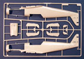
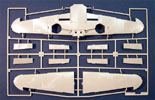
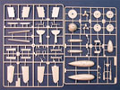
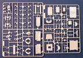
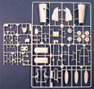
You may click on these small images to view larger pictures
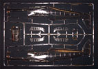
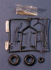
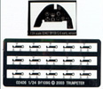
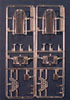
Decals and Instructions
The Trumpeter decal are by AeroMaster and include markings for two aircraft. The first marking options are for Hptm. Franz Wienhusen’s aircraft. Wienshusen scored twelve victories against Allied aircraft over Germany in Nov. 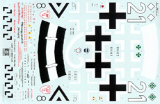
1944 before being killed. The second set are for Oblt. Alfred Seidi with 31 victories over 614 missions. The decals include warning markings and service stencils along with wing walk markings and split Swastikas. The decals show good color density and good print registry. They look nicely thin and react well to standard setting solutions.
Kit instructions come in two parts, the first being a sixteen page A-4 sized booklet opening with some basic model building tips and a complete parts map. There are thirty two exploded view assembly steps that include a couple construction options and plenty of color call outs. The second set of instructions is an A-3 fold out that features a full color profile and wing views for decal placement and exterior painting. The flip side of this sheet contains the paint codes for Model Master acrylics and enamels along with Polly Scale acrylics.
Conclusions
This is a fairly large kit with lots of detail included. The inclusion of movable flight control surfaces and functioning landing gear struts is a nice bonus. The kit does have a few minor inaccuracies but these would escape the notice of most modelers. The parts are well engineered and fit together well. The kit does not include the short tail wheel of early G-10s which is disappointing and only includes the later model wing bulges. Many G-10s had teardrop wing bulges and it would have been nice for these to be included. Even with these few deficiencies I am still happy with the kit and would recommend it to any large scale modeler – it is a huge improvement over the 30 some odd year old Airfix kit in this scale.